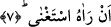

de- azgınlık ederek Allah’ın nimetlerini inkâr eden kimseyi mübalağalı bir biçimde
vazgeçirmek için getirilmiş caydırma ifâdesidir. Kur’an-ı Kerim kırâat olunurken bu
“kella” edatı üzerinde vakfolunur. İmam Secavendi yukarda geçen “ma lem ya’lem”
âyeti üzerinde durur, çünkü ona göre bu “kellâ”, hakkan/gerçekten anlamınadır. Bu
nedenle bu kelimenin üzerine vakıf alâmeti konmuştur.
“İnsan azar” ifâdesi insan kendini kendine yeterli görerek haddi aşar, rabbine karşı
böbürlenir demektir. Burada hem vazgeçirilen, caydırılan kimse hem de neden
vazgeçirilip, caydırıldığı beyân olunmaktadır. Bazı bilginlere göre bu âyet-i kerime
sûrenin sonuna kadar arada zaman aralığı olmakla birlikte Ebû Cehil hakkında nâzil
olmuştur. Akla yakın gelen zâhir ihtimal budur.
7. Kendini kendine yeterli görerek (azar).
Bu ifâde sebeb bildiren tümleçtir (mef’ulün leh). Buna göre âyete mânâ verecek
olursak insanoğlu; kendini kendine yeterli gördüğü ve kendisini müstağni bildiği ve
gördüğü için azar demektir. Bunlar ise Ebû Cehil ve arkadaşları, rab olduğunu iddiâ
eden Fir’avn gibi kimselerdir.
İbn Mes’ud (r.a.) der ki: “İki grup insan hiç doymaz. Bunlar ilim aşığı ve dünya malı
sevdalısı kimselerdir. Ancak bu iki kişi birbirine denk değildir. İlim aşığı günden güne
Allah’ın rızasını kazanırken, dünya malı sevdalısı ise günden güne azar.” Âyette böyle
bir kimsenin azmasına sebeb olarak, kendi nefsini müstağni görmesi, muhtaç görmemesi
gösteriliyor. Azgınlığa sebeb olarak bunun gösterilmesi o kimsenin azgınlığının ana
odak noktasının kendi yanlış zannı olduğuna işâret olunmak içindir.
Rivâyet olunduğuna göre Ebû Cehil, Peygamber (s.a.) Efendimiz’e dönerek; “Kendini
kendine yeter gören azar diye iddiâ ettiğine göre, Mekke dağlarını bize altın ve gümüş
yap, belki o dağlardan altın ve gümüş alırız da sonra azarız ve dinimizi bırakır, senin
dinine döneriz” demişti. İşte onun bu sözü üzerine Cebrâil inerek Peygamber (s.a.)
Efendimiz’e; “Eğer dilersen bunu yapalım ama daha sonra îman etmeyecek olurlarsa
onlara maide ashabına yaptıklarımızı yaparız” der. Peygamber (s.a.) Efendimiz onlara
şefkat ve merhametinden dolayı ona bu duâyı yapmamıştır.”[168]
Görüldüğü üzere bu sûrenin baş tarafı ilmi överken, son kısmı malı kötülemekte ve
kınamaktadır. Bu, ilim ve dine teşvik edici, maldan ve dünyadan sakındırıcı olarak
insana yeter de artar bile!
Peygamber Efendimiz (s.a.) bunun için şöyle duâ ederdi: “Ya Rabbi! azdıran
zenginlikten, unutturan fakirlikten sana sığınırım.”
Yukarda okuduğumuz âyette insanoğlunun kendi nefsini Rabbinin bazı sıfat ve
isimlerinin mazharı gördüğünde bunları kendi nefsi için ayırdığına, çok yüksek bir